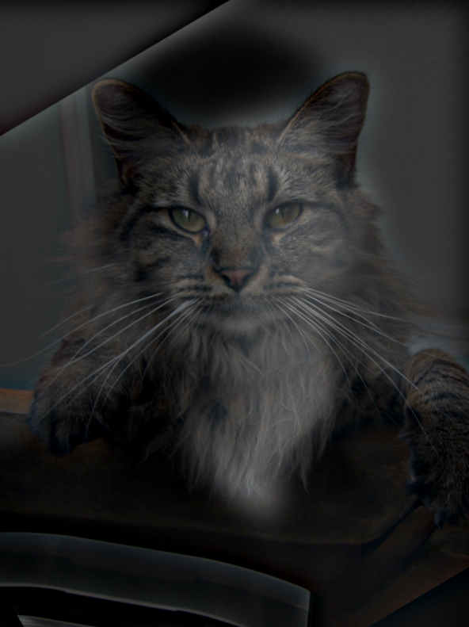
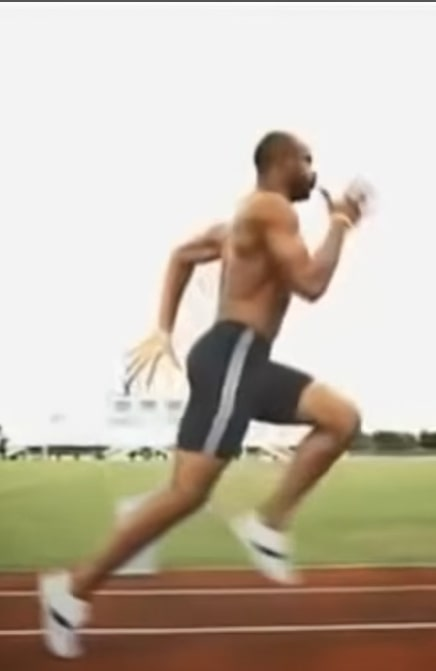
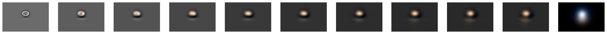
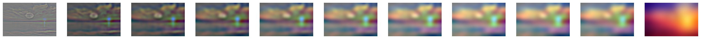

Original Cameraman Image
Image Partial Derivative dX
Image Partial Derivative dY

Gradient Magnitude Image
Binarized Gradient Magnitude, threshold = 0.3
This project looks at various uses of filters and frequencies in image processing. First, we look at taking the partial derivatives and gradients of images. We then highlight the Derivative of Gaussian (DoG) filter, and how it allows us to both smooth and take derivatives with a single convolution.
Then, by picking out the low and high frequency components of images, we are able to create a image sharpening filter, as well as combine the low/high frequency components of 2 differernt images to create hybrid images- images that change in interpretation based on viewing distance.
We conclude by implementing Gaussian and Laplacian stacks, which then enables us to utilize multiresolution blending to compute a gentle seam between two images, allowing us to smoothly blend together images.
Convolving an image with the D_x and D_y kernels allows us to produce the partial derivative in x and in y. We apply these to the cameraman image. Convolving with D_x allows us to see vertical edges, while convolving with D_y allows us to see horizontal edges. We are then able to create an edge image by using these partial derivatives im_dX and im_dY to compute the gradient magnitude = np.sqrt(im_dX ** 2 + im_dY ** 2) Finally, to get a clean black/white edge image, we binarize the gradient magnitudes by setting a threshold=0.3 Pixels above are set to 1, while those below to 0.
|
Original Cameraman Image |
|||
|
Image Partial Derivative dX |
Image Partial Derivative dY |
Gradient Magnitude Image |
Binarized Gradient Magnitude, threshold = 0.3 |
Here, we first blur the image through convolution with a 2D Gaussian, and then apply the process in 1.1 to create an edge image.This way, we can remove some of the noise. With the rule of thumb being to set the half-width of the kernel to be approximately 3*sigma for our gaussian 2D filter, I went with sigma=2, k=12. To create the 2D Gaussian, we can simply take the outer product of a 1D Gaussian and its transpose. Compared to the result of 1.1, we see that blurring the image first reduces noise in the final edge image, but also leads to a bit blurrier edges.
Then, we show that the above can be accomplished with 1 convolution! By pre-computing (gaussian_2D * dX) and (gaussian_2D * dY),we can directly use the resulting kernel to both smooth and take partial derivatives at the same time (this follows from the associativity of the convolution operation)! The results, as seen in the 2nd row, are the exact same as the first row!
For all convolution operations in this project, I chose mode = "same" in order to retain the original image's size. For boundary, I picked "symm", as reflecting the boundary pxiels for padding purposes produced the nicest image compared to other padding methods.
Answers to Questions from Part 1.2: 1) Compared to the output of 1.1, we see that blurring the image first reduces noise in the final edge image, but also leads to a bit blurrier edges. 2) We notice that creating a derivative of gaussian filters first, and then convolving these with the image, yields the same results as the previous part. This is because convolution is associative, so (img * gauss) * deriv = img * (gauss * deriv). The final images look identical, and also have the same threshold value of 0.05.
|
Original Cameraman Image |
Blurred Cameraman Image |
||
|
dX of Blurred Image |
dY of Blurred Image |
Gradient Magnitude of Blurred Image |

Binarzied Gradient Magnitude of Blurred Image, threshold=0.05 |
|
DoG dX Filter |
DoG dY Filter |
||
|
DoG dX of Image |
DoG dY of Image |
Gradient Magnitude Image |
Binarzied Gradient Magnitude Image, threshold=0.05 |
The idea in this part is to sharpen an image by enhancing its high frequency components. An easy way to obtain the high frequency components is by subtracting the low frequencies from the image, and we can quickly get the low frequencies using the 2D Gaussian filter as a low-pass filter. Then, we can add back these high-frequencies into our original image, weighted by a "sharpening coefficient" alpha. The higher alpha is, the stronger the higher frequencies will be in the final image. If alpha is too high, however, the image may look too noisy and have artifacts - thus, we can qualitatively tune alpha, and I have listed the "best" alpha for each image below. Because the Gaussian filter is 2D, I perform this operation for each color channel separately and then combine them together.
For the low-pass Gaussian filter, I picked sigma=1, k=6, following the same rule of thumb.

Original Image |

alpha = 1 |
alpha = 2 |
alpha = 5 |
alpha = 12 |
This eagle image might have had a higher alpha because it contains a lot of higher-frequency components like the edges in the white fur, which would be further enhanced by a higher alpha. For higher alphas, we see the background sky become noisy.
|
Original Image |
alpha = 2 |
alpha = 5 |
alpha = 10 |
alpha = 20 |
To test the effectivness of this sharpening filter, we first start with an image, blur it, and then try to sharpen the blurred image. As we can see, after tweaking the alpha value to alpha=3, the resulting resharpened image looks pretty close to the original image, although it has does some issues like extra noise in the grass in front of the tiger.
|
Original Image |
Blurred Image |

Resharpened, alpha = 1 |
Resharpened, alpha = 3 |
Resharpened, alpha = 5 |
Here, we create hybrid images - images that change in interpretation based on viewing distance. Because higher frequencies tend to dominate human perception for closer distances, if we create an image by blending the high frequency components of im1 and the low frequency components of im2, we get a hybrid image- this image appears like im2 from a distance, but more like im1 closer up. We start by creating a hybrid image of Derek and his cat Nutmeg. The cutoff-frequencies for both the low and high pass was chosen after some experimentation, and this was used to set the Gaussians' k and sigma values. Then, I created 3 additional hybrid images, where each pair explores a different concept (different faces, hanges over time, etc.), and I perform a frequency analysis for one of them. This analysis involves looking at the log-magnitude of the Fourier transform of the various images in the process (original, low-freq, high-freq, combined). The final pair is a failure scenario, where the hybrid image did not turn as good, despite a lot of tuning with the cutoff frequencies. Finally, for the Bells & Whistles, I explore the impact of including color in the low and/or high frequency components by using the Derek and Nutmeg hybrid image as an example.
I aligned the 2 images using their eyes.

Image 1 |

Image 2 |

Hybrid Image |
To get the two images, I used 2 frames from the following YouTube video
|

Image 1 |
Image 2 |
Hybrid Image |
|
Image 1 log-magnitude of Fourier transform (FT) |
Image 2 log-magnitude of FT |
|
|
Image 1 Filtered (low-frequencies) log-magnitude of FT |
Image 2 Filtered (high-frequencies) log-magnitude of FT |
Hybrid Image log-magnitude of FT |
|
Image 1 |
Image 2 |

Hybrid Image |
As you can see below, even the best-looking hybrid image isn't that good- instead of being 2 different things at different distances, the image just looks like both a dolphin and a toucan at all distances. Some reasons may be because the animals aren't aligned, they are too different from each other, and their frequency contents are in the human visual range but still very distinct from each other.
|
Image 1 |
Image 2 |
Hybrid Image |
I found that including color just for the high-frequency image (and keeping the low one in grayscale) worked best in creating the hybrid effect. This supports what we learned in lecture, that cones are more sensitive to higher frequencies than rods. All images above were generated with only the high frequencies colored. My hybrid_image() function has a string parameter mode, which can be "grayscale", "color_high", "color_low", or "color_both". Using this and keeping all other parameters fixed, I show the results of the 4 modes ith Derek and Nutmeg below. Qualitatively, using "color_high" produces the best hybrid images.
|
Grayscale for Both |
Color for only High Frequency Image |
|
Color for only Low Frequency Image |

Color for Both |
In this part, we implement the Gaussian and Laplacian stacks. A stack is like a pyramid without the subsampling step. Thus, in the Gaussian stack, each subsequent image is produced by blurring the current image but not subsampling. To produce the laplacian stack, an element i is produced by subtracting the (i+1)th entry of the Gaussian stack from the ith entry of the Gaussian stack. Effectively, each entry in the Laplacian stack stores the high frequencies that were removed from the corresponding Gaussian stack's entry due to blurring. Thus, the first Laplacian entry would store a band of the highest frequencies, the next entry would store a band of the second highest frequencies, and so on. The Gaussian and Laplacian stacks for both the apple and orange are visualized below. In the next part, we will use these to create the Oraple!
Apple Gaussian Stack
Apple Laplacian Stack
Orange Gaussian Stack
Orange Laplacian Stack
In this part, we utilize the guassiand laplacian stacks from above to smoothly seam 2 images together! To recreate the Oraple, we use these stacks in the following manner: because weighted interpolation is "smooth" only when the 2 images contain a small band of frequencies, we can effectively seam together the orange and apple images from each level of the laplacian. We must also repeat this process for the very last entries of both the apple and orange gaussians, as these represent the lowest frequencies not captured by our laplacian stack. Once we have this stack of nicely-seamed images, we can then simply add them to get the oracle. At each level, when we seam, we use a blurrier and blurrier version of the mask filter.
To get a nicer seam, I use larger Gaussian and Laplacian stacks compared to 2.3, as seen below. Please scroll horizontally to see the full stacks.
I repeat this process of multiresolution blending with 2 other pairs of images- the first uses a horizontal seam, while the second uses an irregular mask. In order to get a good seam, I also manually the crop/resize the images beforehand.
I implement all of the multiresolution blending described above in color - this involves performing the operations on each color channel and then combining the results.

Apple Image |

Orange Image |
Initial Mask |
Apple Orange Mask Stack
Apple Orange Left Stack
Apple Orange Right Stack

Apple Orange Final Stack
Apple Orange Final Image
|
Baobab Image |
Skyscraper Image |
Initial Mask |
Baobab Skyscraper Mask Stack
Baobab Skyscraper Top Stack
Baobab Skyscraper Bottom Stack
Baobab Skyscraper Final Stack
Baobab Skyscraper Final Image
|
Moon Image |
Sunset Image |
Initial Mask |
Moon Sunset Mask Stack

Moon Sunset Moon Stack
Moon Sunset Sunset Stack
Moon Sunset Final Stack
Moon Sunset Final Image
The most important thing I learned from this project was connecting the math of low/high frequencies, to what they visually look like! I better understand how edges in images can lead to higher frequency components, how the background content is genereally the lower-frequency, and other ideas about how frequencies in images look like visually.